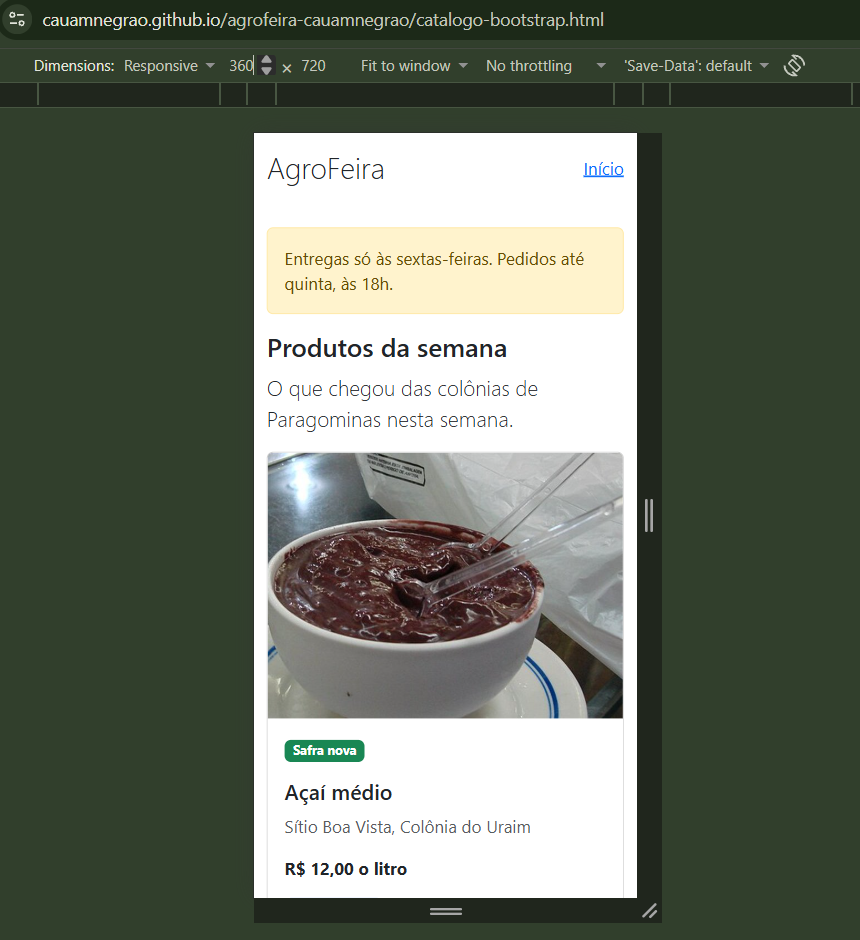
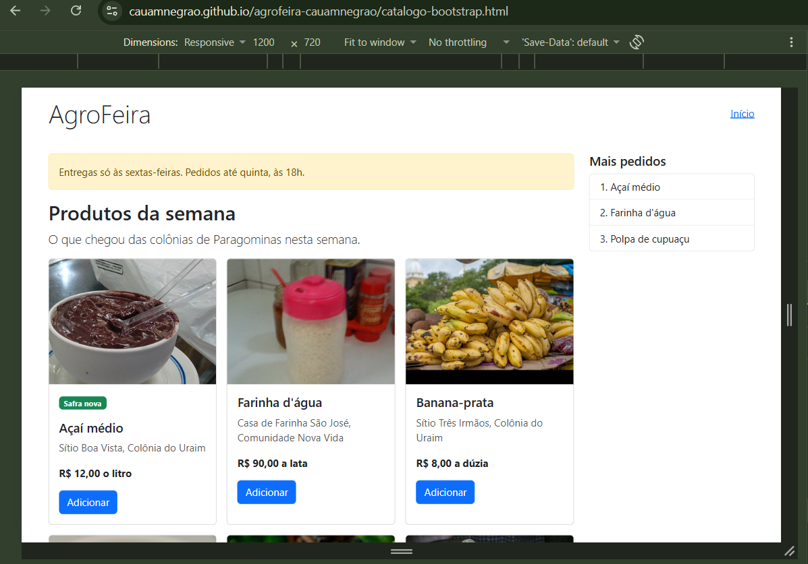
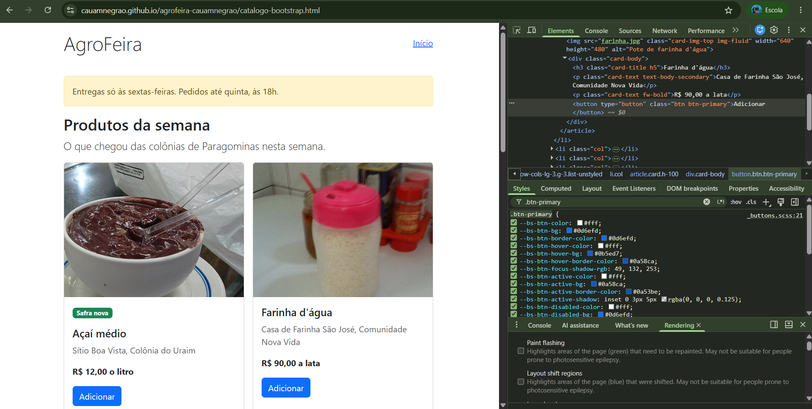
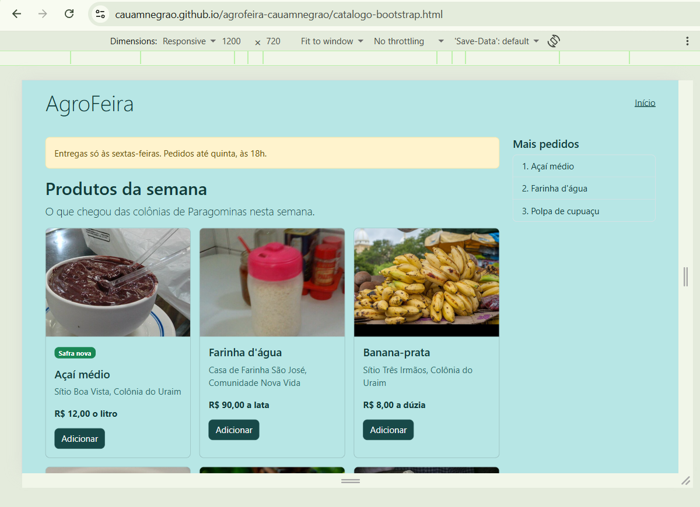
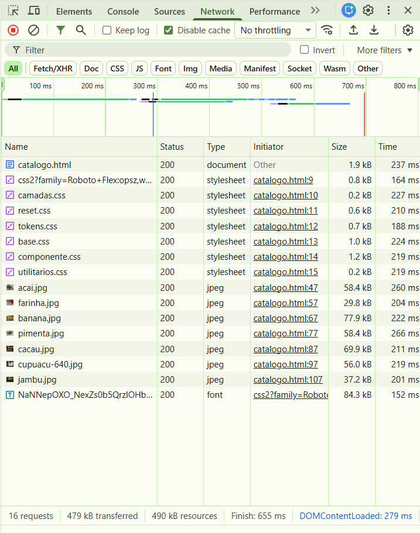
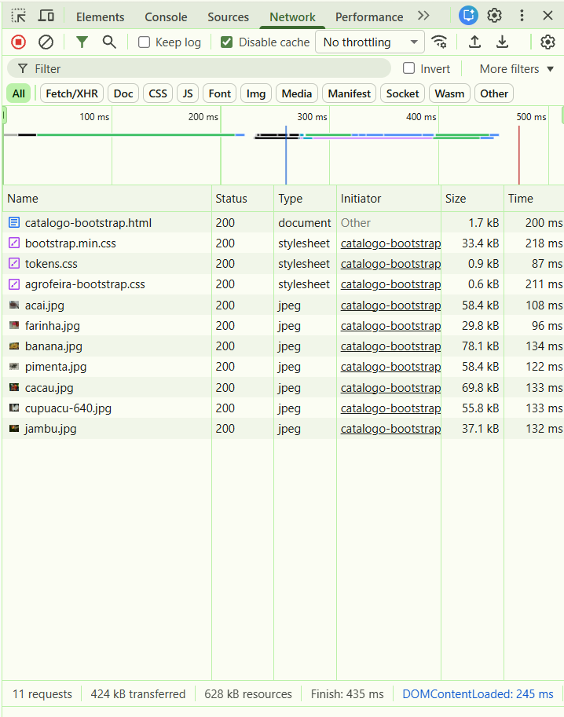
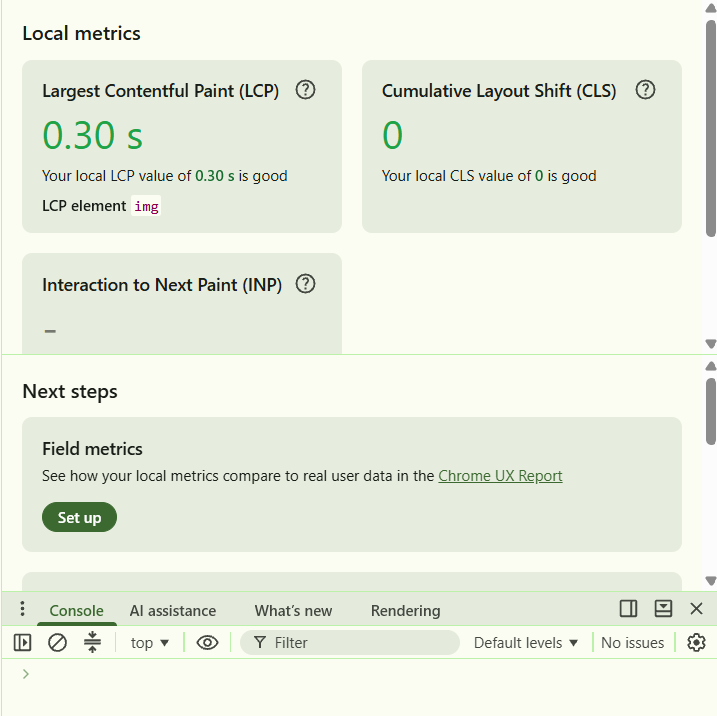
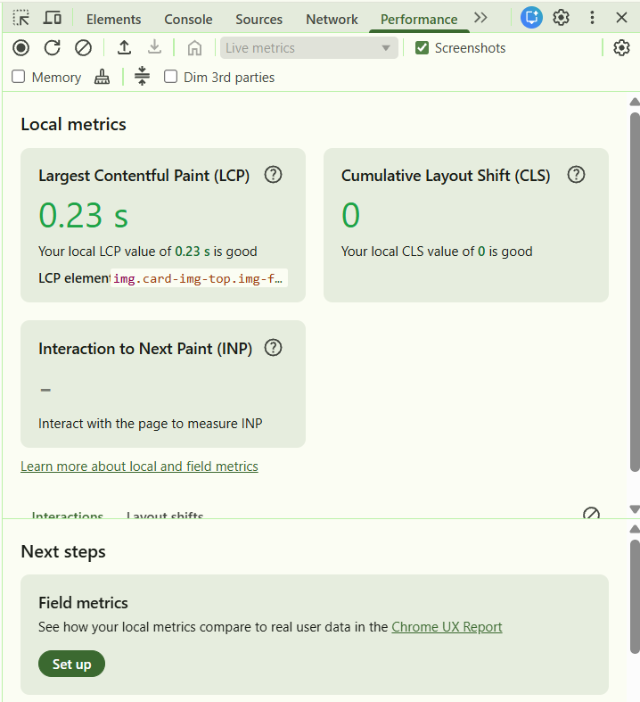

Comparativo: o catálogo autoral e o catálogo em Bootstrap
Aluno: Cauã Martins Negrão | Matrícula: 2024002971
Repositório: https://github.com/cauamnegrao/agrofeira-cauamnegrao
Endereços do site:
- Catálogo Autoral: https://cauamnegrao.github.io/agrofeira-cauamnegrao/catalogo.html
- Catálogo Bootstrap: https://cauamnegrao.github.io/agrofeira-cauamnegrao/catalogo-bootstrap.html
O catálogo em três larguras
Em 360 px, o catálogo em Bootstrap apresenta 1 coluna de cartões e a lista "Mais pedidos" não aparece (teste de rolagem: false). Em 768 px, há 2 colunas e a lista continua ausente (teste de rolagem: false). Em 1200 px, há 3 colunas, a lista aparece à direita e o teste de rolagem também deu false.


1. A customização
| Variável alterada | Valor (token) | Por quê (o que muda na tela) |
|---|---|---|
| --bs-body-bg | var(--cor-fundo) (#B7E6E5) | Muda o fundo da página de branco para o verde-água claro. |
| --bs-body-color | var(--cor-texto) (#113B3A) | Muda a cor do texto geral para o verde escuro, garantindo leitura. |
| --bs-secondary-color | var(--cor-texto-suave) (#2b6a69) | Muda a cor do texto do produtor no cartão para o tom médio. |
| --bs-link-color-rgb | var(--cor-marca-rgb) (24, 73, 72) | Muda a cor do link "Início" de azul para verde escuro. |
| --bs-btn-bg | var(--cor-marca) (#184948) | Muda o fundo do botão "Adicionar" de azul para verde escuro. |
| --bs-btn-hover-bg | var(--cor-marca-forte) (#123456) | Muda a cor do botão ao passar o mouse. |
Por que a --bs-primary sozinha não muda o botão?
Conforme observado na Captura 3, o fundo do botão não lê a variável global --bs-primary. Ele lê a variável específica --bs-btn-bg, que possui um valor hexadecimal fixo (#0d6efd) definido na regra .btn-primary. Por isso, para mudar o botão, precisamos sobrescrever essa variável específica no nosso arquivo CSS.

O antes e o depois:
- Fundo e texto: Antes branco e cinza-escuro de fábrica; depois verde-água e verde escuro (--cor-fundo e --cor-texto).
- Botão Adicionar: Antes azul de fábrica (#0d6efd); depois verde escuro (--cor-marca).
- Link "Início": Antes azul de fábrica (#0d6efd); depois verde escuro (--cor-marca).
- Cantos do cartão, alerta e botão: Antes .375rem (6px) de fábrica; depois var(--raio) (8px).

2. As medições
As medições foram feitas no endereço público, no Chrome, com as caixas "Disable cache" e "Disable network cache" marcadas, e a área da página medindo [960, 730] pixels nas duas versões.
| Critério | Autoral | Bootstrap |
|---|---|---|
| CSS transferido | 4,8 kB (0,8 kB do Google Fonts) | 35,0 kB (33,4 + 0,9 + 0,6) |
| Fontes | 84,3 kB | 0 kB |
| Imagens | ~387,5 kB | ~387,4 kB |
| Documento (HTML) | ~0,9 kB | 1,7 kB |
| Total transferido | 479 kB | 424 kB |
| LCP (valor do meio) | 0,30 s (0,29; 0,33; 0,30; 0,29; 0,30) | 0,23 s (0,48; 0,23; 0,23; 0,20; 0,23) |
| Linhas de CSS próprio | 797 linhas | 82 linhas |
| Classes no cartão do açaí | 4 classes em 3 elementos | 14 classes em 8 elementos (16 com o selo) |




3. A leitura dos números
Os bytes. O Bootstrap baixou cerca de 7 vezes mais CSS que o autoral (35,0 kB contra 4,8 kB). Sem contar a folha do Google Fonts no autoral, a diferença é ainda maior (35,0 kB contra 4,0 kB). O total transferido da página não responde a essa diferença porque as fotos são iguais nas duas versões e dominam o peso total; o Bootstrap tem um CSS maior, mas o autoral carrega a fonte do Google (84,3 kB), o que equilibra o total final.
O LCP. O valor do meio do Bootstrap (0,23 s) foi menor que o do autoral (0,30 s). Porém, a variação entre as cargas do Bootstrap foi altíssima (0,28 s, indo de 0,20 a 0,48), muito maior que a diferença entre as medianas. Isso mostra que o LCP é instável e sofre influência de outros fatores além do framework (como o carregamento da rede e as imagens). Não é possível afirmar categoricamente que a página com Bootstrap é mais rápida apenas por esse número.
As linhas e as classes. O catálogo autoral tem 797 linhas de CSS, enquanto o Bootstrap tem apenas 82 linhas (sendo 60 do tokens.css que já existia e 22 do arquivo de customização). Isso mostra que o Bootstrap economiza muito trabalho de escrita manual. Porém, ao olhar para o HTML do cartão do açaí, o catálogo autoral usa apenas 4 classes distribuídas em 3 elementos (bem limpo e semântico), enquanto o Bootstrap usa 14 classes em 8 elementos (16 se contarmos o selo "Safra nova"). O Bootstrap transfere a complexidade do CSS para o HTML, enchendo a marcação de classes utilitárias. No autoral, o trabalho de mudar uma decisão mora em alterar um token no CSS; no Bootstrap, mora em sobrescrever variáveis específicas do framework.
O que a medição não mostra. Os números não mostram o tempo de aprendizado da ferramenta, nem a dificuldade de sobrescrever o Bootstrap sem usar !important (que exigiu entender as variáveis internas do framework). Também não mostram a falta de controle sobre o HTML, que ficou cheio de classes utilitárias. A contagem de requisições (16 vs 11) não serve como critério de peso, pois o tamanho dos arquivos é mais relevante que a quantidade.
Controle e trabalho. O catálogo autoral tem o link de pular, o menu lateral, a barra de categorias, a container query do cartão e o :has(). Cada um exigiu escrita manual no CSS. O Bootstrap precisou de poucas linhas para o layout, mas para colocar as cores da marca foi necessário entender a arquitetura de variáveis do framework. As decisões de pontos de quebra no Bootstrap são fixas (dadas pelas classes) e não pelo conteúdo, o que reduz o controle sobre o design.
4. Conclusão
Usaria o Bootstrap em um projeto de prototipagem rápida onde o design padrão é aceitável, porque ele entrega um layout responsivo em poucas linhas (como o HTML do catálogo); não usaria na AgroFeira, porque a customização exigiu sobrescrever variáveis e perdeu-se o controle do código, além do CSS do framework pesar 35 kB contra 4,8 kB do autoral.